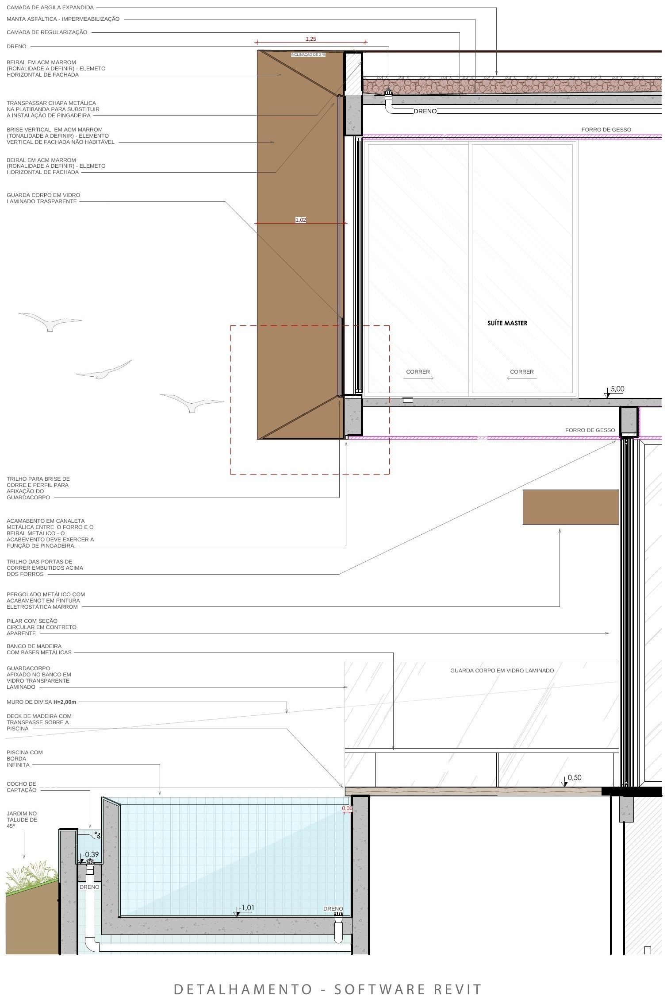
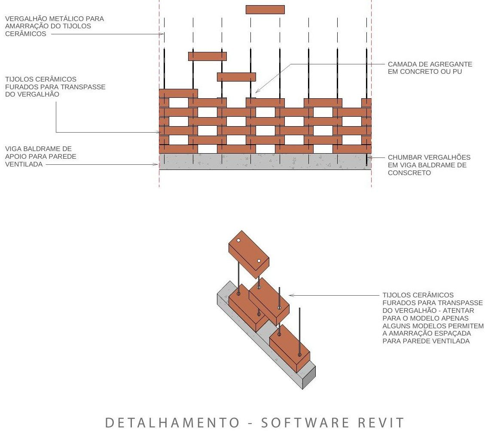

06
Casa Vértice

Casa Vértice is a residential project for a functional, Apollonian family, whose concept is straight lines and the utmost refinement of their meeting points. The house sits on a sloping lot within a gated community and distributes its program across three floors, using the drop of the terrain to set a more horizontal volume into the site.
Sloping site. The project is under development by the Marcos Lula Arquiteto office, with my active participation in the stages of conception, production, and the coordination and review of the team's output — currently in the phase of complementary definitions: electrical, finishes and lighting design.
“The Apollonian concept is inspired by Greek mythology, representing reason, order, clarity and harmonious beauty — the command of form and measure.”After Nietzsche

Process
From sketch to construction set.

